До цього моменту ваші операції були синхронними, і вони дуже добре працювали з автоматом станів(state machine) класу Operation. Коли операція переходить в стан isReady, система знає, що може почати пошук доступного потоку.
Як тільки планувальник(scheduler) знайде потік, в якому може бути запущена операція, вона перейде в стан isExecuting. Після цього ваш код виконується, і по завершенню переходить в стан isFinished.
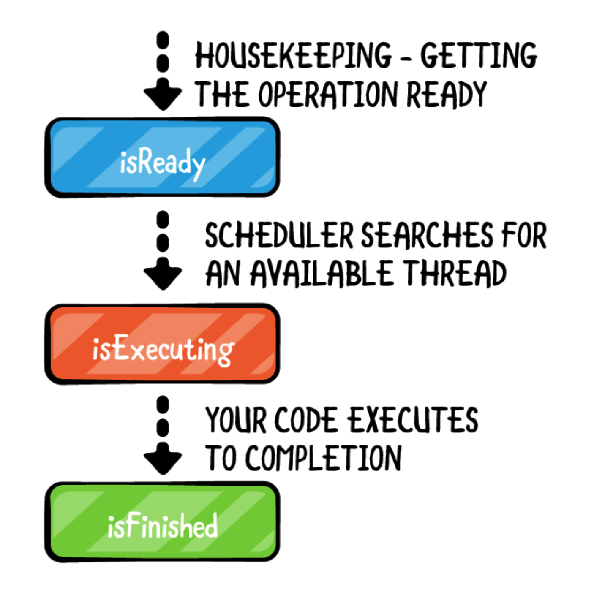Але як це все буде працювати з асинхронними операціями? Коли метод main операції виконується, він запускає асинхронно завдання, а потім завершує роботу. Стан операції не може переключитися на isFinished в цей момент, тому що асинхронний метод, ймовірно, ще не завершений.
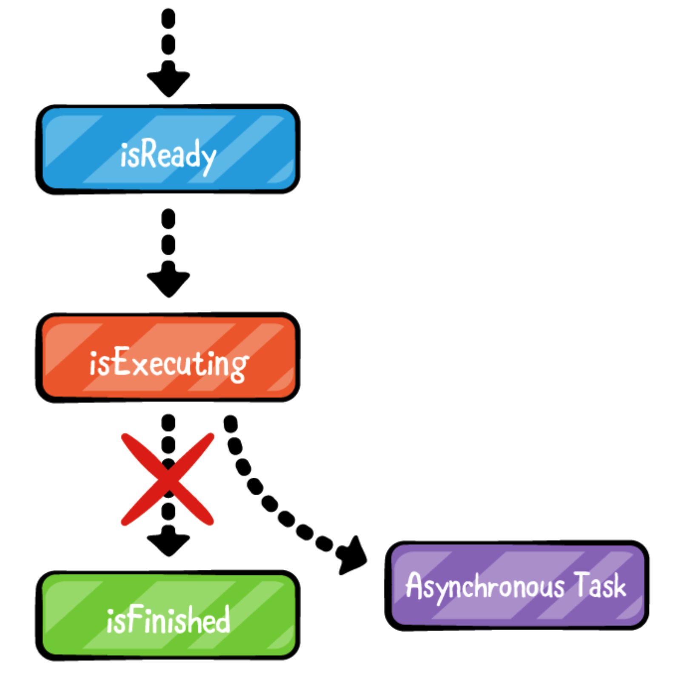Асинхронні операції
Можна перетворити асинхронний метод в операцію, але це потребує трохи більше роботи. Вам потрібно буде управляти змінами стану вручну, так як операція не може автоматично визначати, коли завдання завершило виконання. Що ще гірше, всі властивості стану доступні тільки для читання (read-only)!
Насправді управляти станами досить просто. Вам просто потрібно буде створите базовий клас, від якого будуть успадковані всі використовувані вами асинхронні операції. Ні, ми не знаємо, чому цей клас не є частиною фреймворка.
AsyncOperation
У прикріплених матеріалах до цієї глави відкрийте AsyncAddOperation.playground. Ви можете ігнорувати помилку компіляції, тому що код ще не завершений.
Відстеження стану
Оскільки стан операції є read-only, вам спочатку потрібно зробити можливість відстежувати зміни в режимі читання-запису, тому створіть перерахування State у верхній частині файлу:
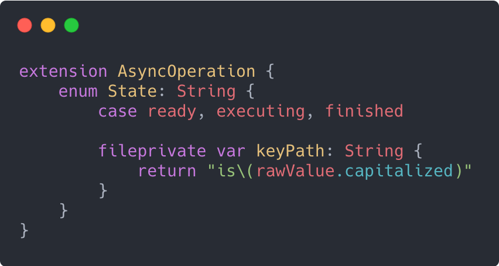Ще в главі 6 «Операції» згадувалося, що клас Operation використовує KVO notifications. При зміні стану isExecuting, наприклад, буде надіслано KVO-повідомлення. Створені вами стани не повинні починатися із префіксу 'is' і повинні бути в нижньому регістрі.
Написана вами обчислювальна властивість keyPath допомагає підтримувати вищезгадані повідомлення KVO. Коли ви звертаєтесь до keyPath вашого поточного стану, перша буква значення стану буде починатися з великої літери і перед значенням буде префікс 'is'. Таким чином, коли ваш стан встановлено на виконання, keyPath поверне isExecuting, що відповідає властивості в базовому класі Operation.
Зверніть увагу на модифікатор fileprivate. Це той випадок, коли він став у пригоді. KeyPath повинен бути доступний для всього файлу, але не ззовні. Якщо ви просто зробили б його закритим, то він не був би видимий за межами самого перерахування.
Тепер, коли у вас є тип вашого стану, вам знадобиться змінна для зберігання стану. Оскільки вам необхідно відправляти відповідні повідомлення KVO при зміні значення, варто додати property observers. Додайте наступний код в клас AsyncOperation в розділі //Create state management:
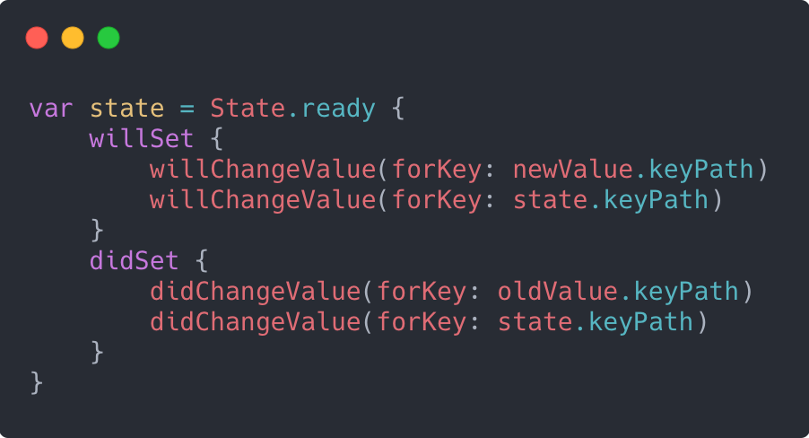За замовчуванням ваш стан .ready. Коли ви змінюєте значення стану, ви фактично відправляєте чотири повідомлення KVO! Впевніться, що зрозуміли що відбувається і чому там чотири записи, а не два.
Розглянемо випадок, коли ви готові змінити стан. В цей момент виконаються наступні оновлення: isReady стане false, а isExecuting стане true. Будуть відправлені ці чотири повідомлення KVO:
- Зміниться на isReady.
- Зміниться на isExecuting.
- Змінився на isReady.
- Змінився на isExecuting.
Базовий клас Operation повинен знати, що властивості isExecuting і isReady змінюються.
Основні властивості
Тепер, коли у вас є спосіб відслідковувати зміни стану і сигналізувати, що вони дійсно були виконані, вам необхідно перевизначити екземпляри деяких методів базового класу. Додайте ці три перевизначення в клас нижче //Override properties:
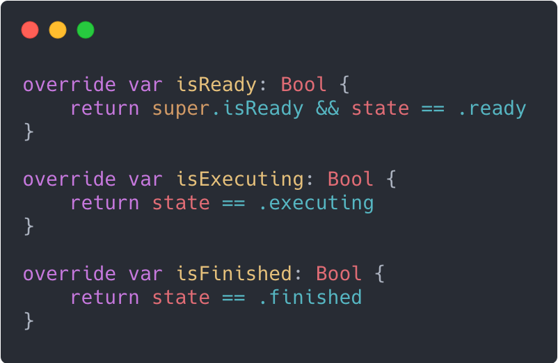Note: Дуже важливо включити перевірку isReady в метод базового класу, оскільки ваш код не знає що відбувається, поки планувальник визначає, чи готовий він знайти для вашої операції потік.
Остання властивість, яку потрібно перевизначити, просто вказує, що ви дійсно використовуєте асинхронну операцію. Додайте наступний фрагмент коду:
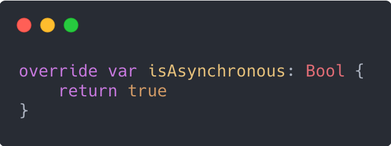Початок операції
Все, що залишилося зробити, це реалізувати метод запуску. Незалежно від того, виконуєте ви операцію вручну чи дозволяєте черзі операцій робити це автоматично, спочатку викликається метод start, а потім він відповідає за виклик main. Додайте наступний код безпосередньо під //Override start:
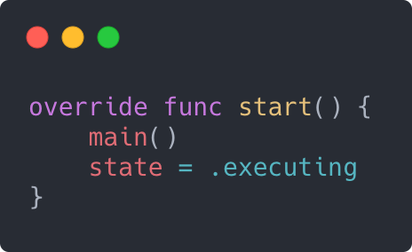Note: Зверніть увагу, що цей код не викликає super.start(). В офіційній документації (https://apple.co/2YcJvEh) чітко згадується, що ви не повинні викликати super кожного разу при скасуванні запуску.
Оскільки ви виконуєте завдання асинхронно, метод main майже відразу ж повернеться, тому вам потрібно вручну повернути стан назад в .executing, щоб операція знала, що вона все ще виконується.
Якби в Swift була концепція абстрактного класу, який не можна створити безпосередньо, ви б позначили цей клас як абстрактний. Іншими словами, ніколи безпосередньо не використовуйте цей клас. Ви завжди повинні створювати підклас AsyncOperation!
Математика - це весело!
Погляньте код в playground. Для вас не повинно бути нічого нового, якщо ви вже пройшли глави цієї книги, присвячені GCD. Якщо ви запустите playground ви побачите, що числа додані правильно.
Ключовою деталлю операції AsyncSumOperation, на яку слід звернути увагу, є те, що ви повинні вручну встановити стан операції на .finished після завершення асинхронного завдання. Якщо ви забудете змінити стан, операція ніколи не буде відзначена як завершена, і у вас буде так званий нескінченний цикл.
Мережевий TiltShift
Пора повернутися до фільтрації зображень. До цих пір ви використовували жорстко запрограмований список зображень. Хіба не було б чудово, якби зображення завантажувалися з мережі? Мережеві операції - це прості асинхронні завдання! Тепер, коли у вас є спосіб перетворити асинхронне завдання в операцію, приступимо до справи!
Початковий проект, розташований в папці starter/Concurrency, продовжує створюваний вами проект, але включає два нових файли. Якщо ви хочете продовжити роботу з поточним проектом Xcode, обов'язково завантажте обидва файли.
- AsyncOperation.swift: це асинхронна операція, створена вами раніше в цій главі.
- Photos.plist: це список URL-адрес різних зображень.
NetworkImageOperation
Відкрийте Concurrency.xcodeproj і створіть новий файл Swift з ім'ям NetworkImageOperation.swift. Ви, ймовірно, зробите більше ніж це необхідно для даного проекту, але таким чином у вас буде компонент багаторазового використання для будь-якого іншого проекту, над яким ви працюватимете.
Загальні вимоги до експлуатації наступні:
- Повинен приймати або рядок, що представляє URL-адресу, або фактичну URL-адресу.
- Слід завантажувати дані за вказаною URL-адресою.
- Якщо надається completion handler типу URLSession, використовуйте його замість декодування.
- Якщо у разі успіху немає completion handler, то потрібно встановити необов'язкове значення UIImage.
Перші дві вимоги повинні бути досить очевидними. Третя і четверта повинні надати користувачу максимальну гнучкість. У деяких випадках, як у цьому проекті, вам просто потрібно отримати декодований UIImage і готово. Однак інші проекти можуть вимагати спеціальної обробки. Наприклад, вас може турбувати, в чому полягає конкретна помилка, чи має заголовок HTTP валідний заголовок Content-Type і т.д.
Почніть із створення підкласу AsyncOperation і оголошення змінних, які будуть потрібні класу. Замініть вміст NetworkImageOperation.swift наступним:
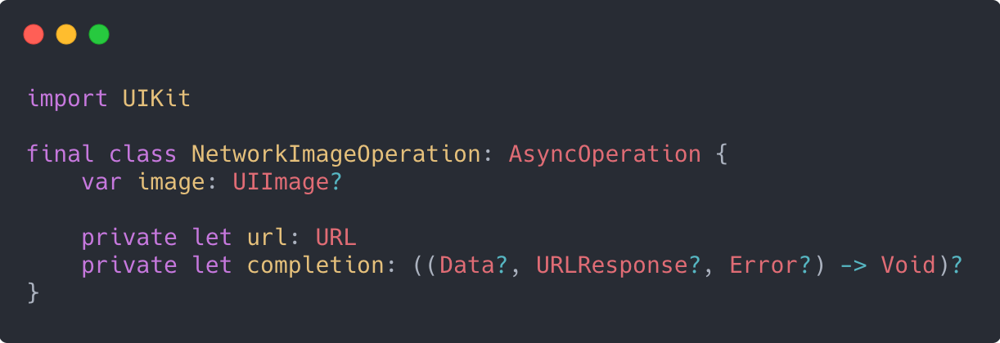Сигнатура замикання - це та ж сигнатура, яка використовується методами URLSession. Щоб задовольнити вимогам 1 і 2, вам необхідно визначити відповідні ініціалізатори. Додайте наступний код в свій новий клас:
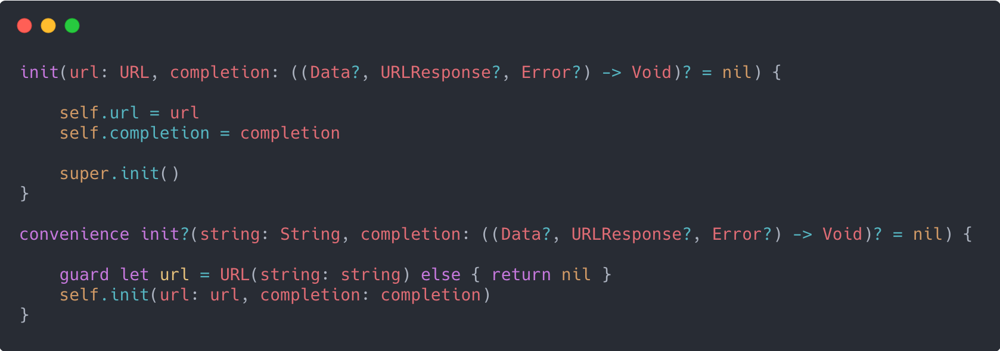Ймовірно, це не дуже частий випадок, коли хтось захоче явно обробляти дані, які повертаються HTTP, тому має сенс встановити для completion блоку значення за замовчуванням nil. Передача фактичної URL-адреси є «призначеним ініціалізатором»(designated initializer), тому можна оголосити convenience ініціалізатор, який замість типу URL приймає рядок. Зверніть увагу, що цей конструктор є необов'язковим. Якщо ви передасте рядок, який не може бути перетворена в URL-адресу, конструктор поверне nil.
Тепер про саму роботу операції. Перевизначите main і запустіть нову задачу URLSession. Додайте нижче свої ініціалізатори:
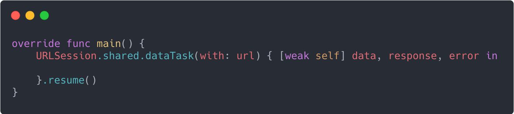Оскільки це асинхронна операція, завжди можливо, що об'єкт буде видалений до того, як відбудеться завантаження даних, тому варто захоплювати self із модифікатором weak.
Прийшов час зайнятися виконанням завдання. Додайте наступний код в замикання:
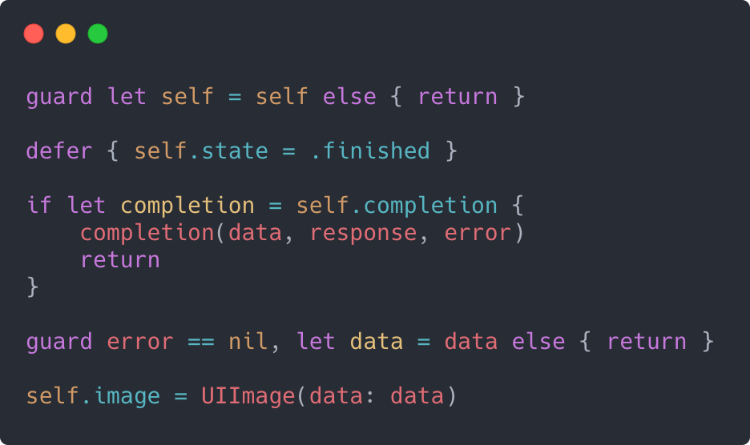Використання defer гарантує, що операція буде відзначена як завершена. У поточному методі вже є три можливих шляхи виходу, плюс ви ніколи не знаєте, які зміни ви можете внести в майбутньому.
Виконання вимог 3 і 4 так само прості. Якщо користувач надасть completion, ви просто передаєте йому відповідальність за обробку і виходите. Якщо немає, то ви можете декодувати зображення.
Зверніть увагу, що немає необхідності створювати виключення або повертати будь-які умови помилки. Якщо щось не вдається, властивість image дорівнюватиме nil.
Використання NetworkImageFilter
Поверніться до TiltShiftTableViewController.swift. Щоб отримати список URL-адрес, які ви зможете відображати, додайте наступний код в початок вашого контролера:
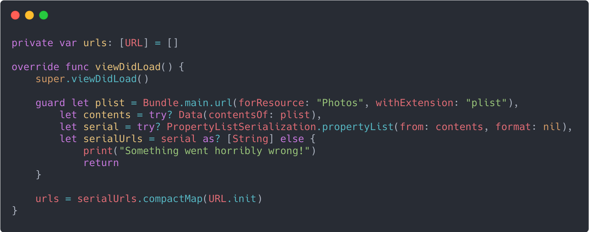Це стандартний механізм Swift для читання вмісту файлу .plist і перетворення рядків у об'єкти URL. Можливо, ви раніше не бачили compactMap. Він працює так само, як і map, тільки виключає будь-які елементи nil. У цьому випадку це означає, що масив urls буде містити тільки дійсні об'єкти URL.
У tableView(_: cellForRowAt :) замініть наступні два рядки:
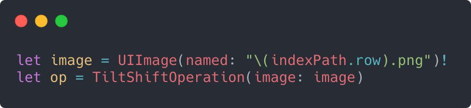Наступним:
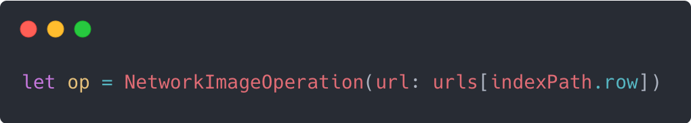Клас TiltShiftOperation використовував outputImage в якості змінної результату, тоді як NetworkImageOperation використовує тільки зображення, тому замініть цю властивість, змінивши наступний рядок:
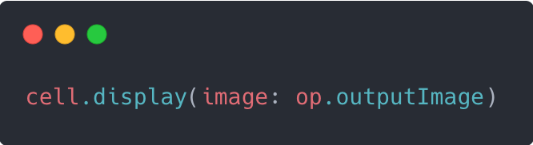На:
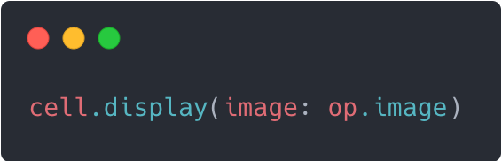На цьому етапі ви можете створити і запустити додаток і переглянути великий список зображень.
Прокрутка буде приємною і плавною, так як UI не зависає ні на якому етапі роботи мережі.
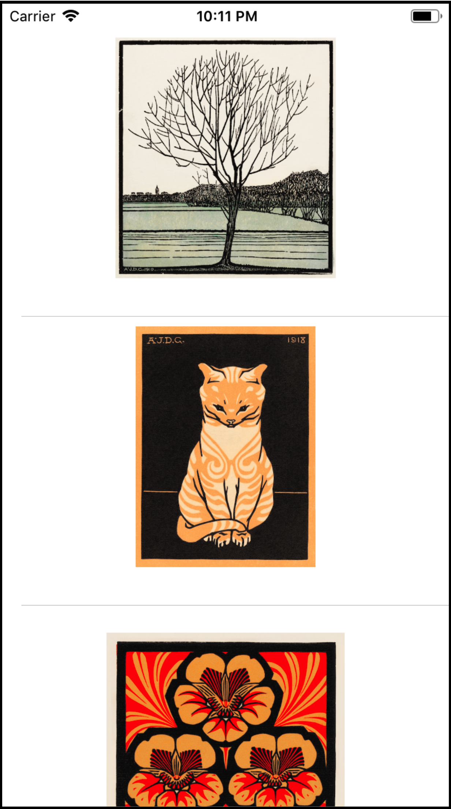Наступний крок
Тепер у вас є багаторазові компоненти як для завантаження зображень по мережі, так і для фільтрації tilt shift. Хіба не було б добре мати можливість використовувати обидва відразу? У наступному розділі ви дізнаєтеся, як пов'язати ці два елементи разом і, нарешті, зрозумієте, чому варто використовувати операції замість Grand Central Dispatch.